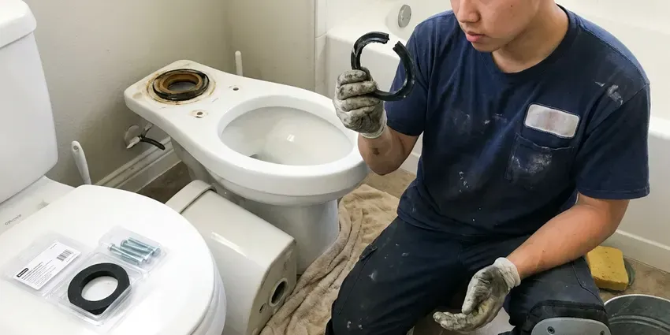
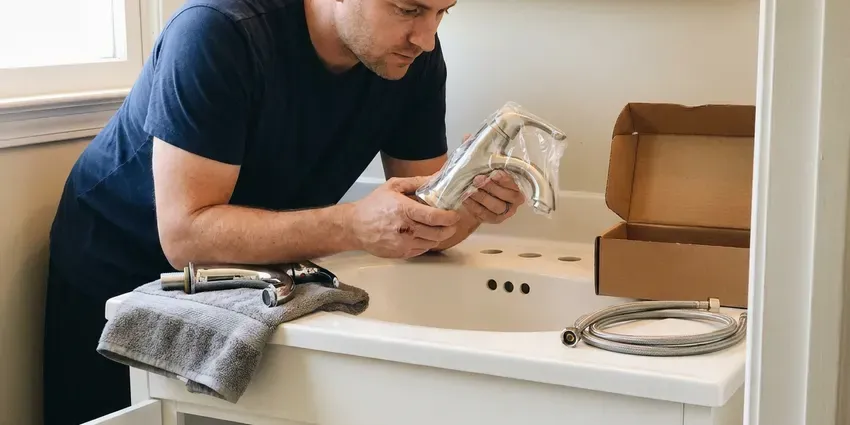
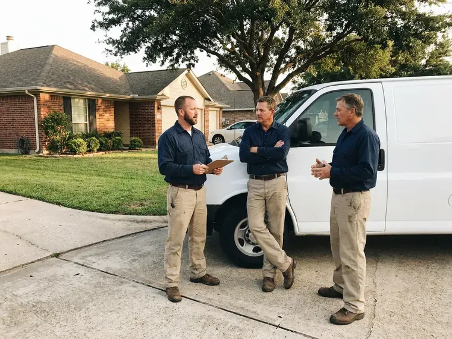

Sink Installation in Fayetteville, NC
New sink for the kitchen or bath in Fayetteville, NC? HFN Plumbing mounts it, connects it and leak-tests it in one visit for most styles.
- Labor Guaranteed
- Same-Week Scheduling
- Leak Checked Before We Leave
- Undermount and Vessel Installs

Get Your New Sink Set in Fayetteville, NC
Most installs finish in one trip, and undermounts take two short ones.
Kitchen and Bath Sink Installs in Fayetteville, NC
Our plumbers install sinks in North Carolina homes built in every decade. A 1960s bath might have a galvanized wall stub and a steel drain arm, while a newer house has PVC and PEX, and the install plan changes with each. We bring adapters for both. Nothing gets forced to fit.
Work we handle every week:
- Reset trap arms for new bowl heights
- Hang pedestal and wall-mount sinks on carriers or blocking
- Install vessel sinks with the right slotted or unslotted drain

Additional Bathroom Plumbing Services in Fayetteville, NC
From toilets to showers, our bathroom plumbing team in Fayetteville, NC repairs, installs, and replaces every fixture with clean, code-compliant work.




Fayetteville toilet bowl replacement specialists


Professional faucet installation, Fayetteville


Customers
Why Choose HFN Plumbing for Sink Installation in Fayetteville, NC?
Most sink leaks trace back to the install. A rim that was not sealed all the way around, a slip nut cranked too tight or a supply line stretched to reach the stop will all fail in the first year. Those are the steps we never rush. Then we fill the bowl and watch the joints.
- Correct Drain Height, The trap arm gets moved to match the new bowl so nothing slopes the wrong way.
- Quality Workmanship, Rims sealed all the way around and traps set without stress on the joints.
- Transparent Pricing, One written price for the install before any work starts.
Citywide Coverage
New construction is covered too. In new builds and additions we work from the existing rough-in and your builder's fixture specs. Punch lists get closed fast.
Experienced Team
Brand knowledge saves time. We know which Kohler, Elkay or Blanco sinks ship with clips and which need extra hardware. Missing parts mean delays.
Safety-First Approach
Water gets shut off and tested first. Stops or the main get closed and tested at the faucet, and any stop that leaks gets replaced. We never cut into a live line.
Trusted Certified Fayetteville Plumbing Services Professionals
At HFN Plumbing, we take pride in licensed, certified plumbing services throughout Fayetteville, NC. Those papers on the wall mean something. Every repair, install and maintenance visit follows strict safety and quality rules, and the plumbers doing the work carry recognized industry credentials.
Call Us Now PHCC Plumbing Contractor Recognition
PHCC Plumbing Contractor Recognition Angi Certified Pro
Angi Certified Pro ISO 9001 Quality Management Certification
ISO 9001 Quality Management CertificationHow We Set New Sinks in Fayetteville, NC
Bathroom Sink Installation in Fayetteville, NC
Bathroom sinks are lighter but fussier. The faucet holes have to match the faucet you picked, whether that is a single hole, a 4 inch centerset or an 8 inch widespread, and the overflow has to line up with the pop-up drain. We check the spec sheet first. Mismatches get caught before the counter is cut.

Wall-Mount and ADA Sink Installation in Fayetteville, NC
Wall-hung lavatories need a carrier or heavy blocking. ADA layouts call for a rim at or under 34 inches, open knee space, and insulated pipes below. Offset drains help with knee space. Lever or sensor faucets finish it off.
Faucet and Disposal Hookup in Fayetteville, NC
New sinks often get a new disposal. The disposal goes on a new flange, the dishwasher knockout gets punched, and the outlet lines up above the trap. An unpunched knockout backs up the dishwasher. We run both before leaving.
Bathroom Vanity Sink Installation in Fayetteville, NC
Vanity tops with integrated bowls are the easiest bath install. The top sits on the cabinet in a bead of silicone, the faucet and pop-up go on first, and the trap arm usually needs a small adjustment to meet the new tailpiece. The backsplash gets sealed last. We caulk it to the wall.
Sink Installation Cost Comparison in Fayetteville, NC
Drop-in swaps cost the least. Undermounts cost more for clips and cure time, and vessels add a special drain and a taller faucet. Moving the drain adds the most. We price each piece on the quote.
Undermount Bowl Setting on Stone in Fayetteville
Stone shops cut the hole, but we set the bowl. Getting an undermount centered under a polished cutout so the reveal is even on all sides takes a helper, a few shims and patience before the clips get tightened. A crooked reveal never goes away. We check it from both ends of the counter.
Kitchen Sink Replacement in Fayetteville
Pulling the old kitchen sink is half the job. Strainers are often fused on, the disposal has to come off, and the dishwasher hose needs a fresh high loop. After that, the new bowl goes in. We reuse the disposal if it still runs well.

Undermount Sink Installation in Fayetteville
Undermount sinks hang from the countertop. The bowl hangs on clips with a full bead of silicone, and it stays braced overnight while the adhesive cures. Adhesive by itself will not hold it. Plumbing goes on the next day.
Sink Installation Near Me in Fayetteville, NC
Local means we come back. If a clip loosens or a joint weeps after the install, the same crew that did the work is a short drive away and can be there within a day or two. Callbacks get priority.
Pricing should be local too. We quote a flat install price on site, based on the sink you picked and the plumbing you have, and it does not move once we start the job. Trip fees are included.
HFN Plumbing at a Glance
- Licensed and insured plumbers serving Fayetteville, NC
- 24/7 emergency service with same-day scheduling
- Upfront, flat-rate pricing before work begins
- 4.8-star rated by 840+ North Carolina customers
Fayetteville Map
Fayetteville Information
- Population
- 209,749
- Area codes
- 910/704/336
- Service area
- Fayetteville and towns within a 40 mile drive
- Nearby
- Apex, Cary, Raleigh, Chapel Hill
Well owners around Fayetteville benefit from periodic water testing and, when needed, neutralizers or filters that preserve pipes and appliances. Plenty of Fayetteville, NC homes still have their original shutoffs and drain stubs, and a sink install is the best time to replace them.
Talk to a Plumber
Reach out to HFN Plumbing for reliable plumbing work done by licensed pros in Fayetteville, NC.
Our Specialized Plumbing Services in Fayetteville, NC
At HFN Plumbing, we handle the full list of plumbing services across Fayetteville, NC. From leak detection to full system installs, our team works fast and charges fair prices on homes and commercial properties alike. Explore our core services below:


How a Sink Install Goes in Fayetteville, NC
A sink install with HFN Plumbing usually takes one visit, two for undermounts.
Request a Quote
Call (980) 364-4317 and describe the sink you picked. You get a flat price.
Remove and Prep
We pull the old sink, cap the lines and replace worn stops.
Install and Test
The new sink is set, sealed and plumbed, then tested with a full bowl.
Frequently Asked Questions About Sink Installation in Fayetteville
Drop-in and pedestal sinks usually run $250 to $550 for labor. Undermounts and vessels run $350 to $800, and a second sink or drain move can hit $900 to $1,800. The fixture is not included.
Yes, that is routine work. The stone shop cuts and polishes the hole, then we hang the undermount bowl with clips, seal it with silicone and come back after it cures to mount the faucet and connect the drain. Faucet holes get drilled by the shop.
A vanity top swap is a fair weekend project. The hard parts are getting the trap arm lined up without strain and sealing the drain flange so it does not weep over time. If it drips, we can fix it.
Empty the cabinet under the sink. Clear the counter, move fragile items, and unbox the sink and faucet early to check for damage. Keep pets in another room.
A drop-in swap is doable for a handy homeowner. Undermounts and drain changes are harder, since a small mistake turns into a hidden leak months later. Those are better left to us.
Sometimes, for function. Shallow bowls or narrow doubles are good reasons to replace a working sink. Style alone is a fair reason.
Often, if it is in good shape. A faucet that still seals and fits the mounting holes in the new sink can be moved over with new supply lines and a fresh gasket, which saves the cost of a new one. We may swap the cartridge while it is off.
Yes, in writing. Our labor warranty covers the connections we made and the mounting we installed, and the sink and faucet carry their own manufacturer warranty, which for faucets is often lifetime for the original owner. Save the paperwork.
Hear From Customers Who Hired Our Plumbing Experts

Brian W.
I smelled gas behind the dryer and called right away. The plumber found a corroded flex connector, replaced it, and pressure tested the whole line before turning the gas back on. He let me watch the gauge hold steady for fifteen minutes.
Gas Line Repair · Apex, NCGreg S.
I manage a small strip center with six tenants. HFN Plumbing handles our annual backflow testing and fixed a recurring clog in the shared sewer line that had been backing into the nail salon. Their reports come in clean and on time.
Commercial Plumbing · Raleigh, NC
Karen W.
After our third pinhole leak in copper, we stopped patching. HFN Plumbing gave us a written plan room by room and repiped the house in PEX while we stayed in it. The crew covered our floors every morning and cleaned up every night.
Repiping · Fayetteville, NC
Monica A.
Our water bill nearly doubled in one month with no change in how we used water. The tech checked the meter, heard the leak under the hallway with his equipment, and opened a hole about a foot square. Fixed the same day.
Slab Leak Repair · Wake Forest, NC
Daniel K.
A pipe burst in the garage ceiling at 11 at night. Someone answered on the second ring, and the plumber was in my driveway about fifty minutes later. He shut off the main, cut out the split section, and had water back on before 2 am.
Emergency Plumbing · Chapel Hill, NCSofia M.
Two new toilets went in during one visit. The tech set them on new wax rings and swapped the old supply lines. He also noticed our bathroom faucet dripping and replaced the cartridge while he was there. No mess left behind.
Toilet Installation · Raleigh, NC